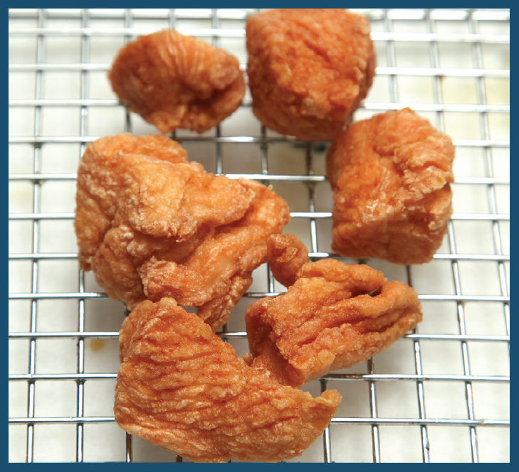
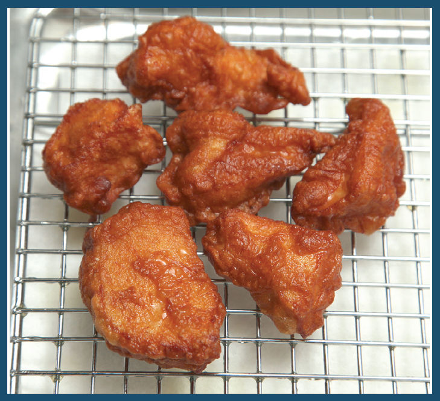
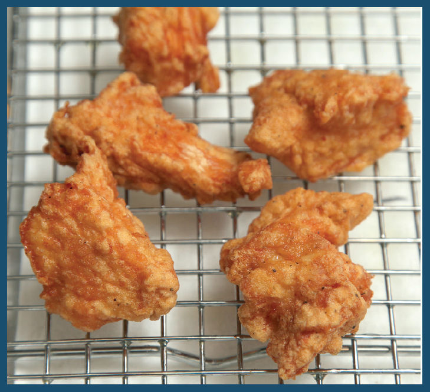
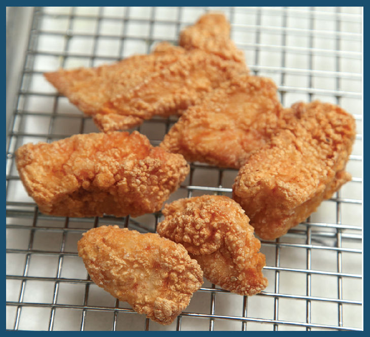
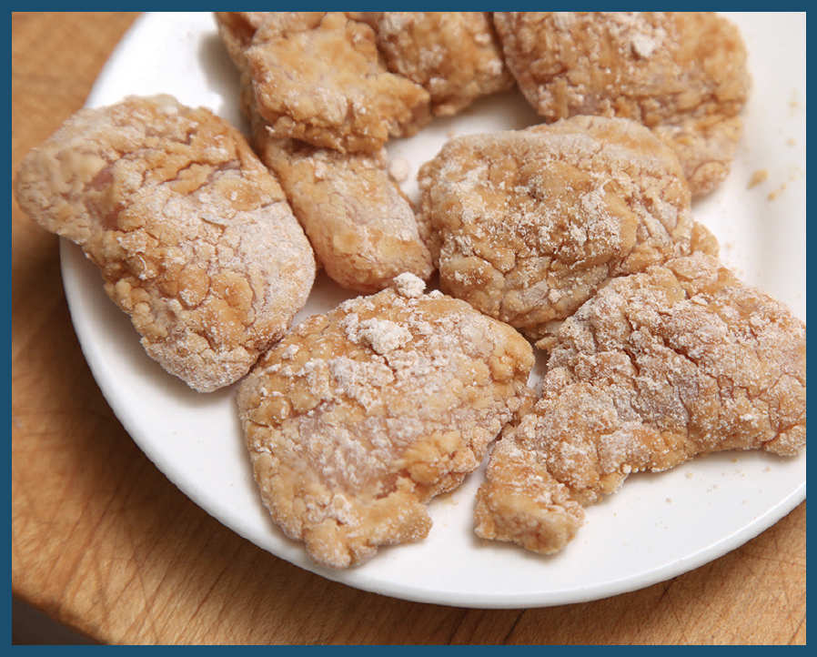
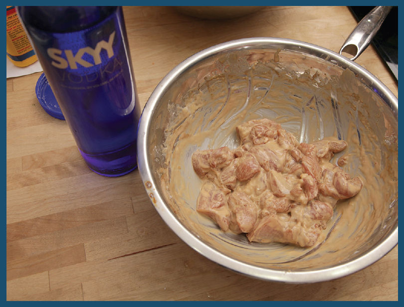
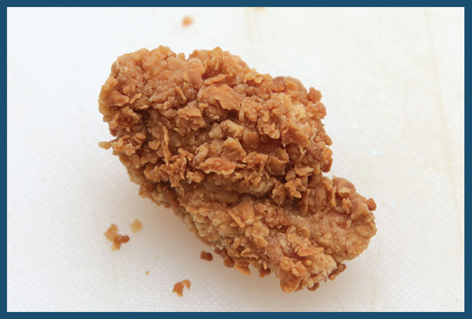

4.3 CRISPY-AND-SAUCY RECIPES, THE CHINESE AMERICAN WAY

I think it’s high time that General Tso gets his chicken recognized as one of the national dishes of the United States. After all, ask yourself the question that Jennifer 8. Lee, journalist and author of The Fortune Cookie Chronicles, asked in a 2008 TED Talk: how many times a year do you eat Chinese food versus the supposedly all-American apple pie?
For me, the ratio is easily 30 to 1, Chinese food to apple pie. Indeed, in most years, that ratio would become a mathematically undefined, divide-by-zero situation.
According to a very brief internet search, there were 46,700 Chinese restaurants in the United States in 2015—more than all of the McDonald’s, Burger Kings, Wendy’s, Taco Bells, and Kentucky Fried Chickens combined. And whether it’s called General Tso’s (as it is where I grew up in in New York), General Gau’s (the way I knew it through my college years in New England), Cho’s, Chau’s, Joe’s, Ching’s, Chang’s (as it’s called at Chinese American shopping mall staple P. F. Chang’s), or, as they call it in the navy, Admiral Tso’s, walk into any one of those restaurants and chances are you’ll find it on the menu.
Its origins are still up for debate. Its namesake general, Zuo Zongtang, almost certainly never tasted the dish before his death in 1885, and, as Lee discovers, his descendants—many of whom still reside in the general’s hometown of Xiangyin—don’t recognize the dish as a family heirloom or even as particularly Chinese for that matter.
As my friend Francis Lam reported in a 2010 article for Salon.com, Ed Schoenfeld, proprietor of New York’s Red Farm and perhaps the world’s foremost expert on Chinese American cuisine, traces its origins to Chef Peng Jia, a Hunanese chef who fled to Taiwan after the 1949 revolution. Made with unbattered large chunks of dark-meat chicken tossed in a tart sauce, it was more savory than sweet. It wasn’t until a New York–based chef, Tsung Ting Wang (better known as T. T. Wang), learned the recipe from Peng in Taiwan, brought it back, added a crispy deep-fried coating and sugar to the sauce, and changed the name to General Ching’s, that it stuck (the sugary sauce and the name), eventually making its way onto Chinese menus across the country and the globe (the name got changed a bit in the process). It’s so popular that an entire feature-length film on its origins—The Search for General Tso—debuted in 2014 at the Tribeca Film Festival.
It makes sense: As Americans we like our food sweet, we like it fried, and man, do we love chicken.
General Ching’s chicken wasn’t the only dish that chef T. T. Wang adapted and popularized at New York’s Shun Lee Palace between its opening in 1971 and his passing in 1983. He can be credited with popularizing—if not outright creating—orange beef and crispy whole deep-fried sea bass. The former consists of slices of beef breaded and deep-fried until crisp, then tossed with a sweet and tangy sauce flavored with dried orange peel, and has since become a staple at Chinese American restaurants on the East Coast. Why chicken, beef, and fish? Chef Wang and his business partner Michael Tong were always acutely aware of their popularity among New York’s Jews. Indeed, there’s a custom among many families in the New York Jewish community of ordering Chinese food on Christmas Day, which can likely be traced back to Shun Lee and its other midtown competitors.
Since then, the repertoire of crisply fried foods tossed in a sticky sweet-sour-savory sauce has expanded as it made its way across the country. Andy Kao, the executive chef of the California-based chain Panda Express, created their signature orange chicken in 1987. It’s now served at their over two thousand locations, alongside their “Beijing Beef,” a stir-fry of bell pepper, onion, and crispy fried beef strips in a General Tso–style dark, sweet, and vinegary sauce, and their “Honey Walnut Shrimp,” which, again, is crunchy, sweet, tangy, and deep-fried.
The details of these dishes vary—the protein, the vegetables, the sauce—but the basics are the same: food coated in a crisp, craggy, deep-fried coating that Colonel Sanders himself would be proud of (what is it with military titles and fried chicken anyway?), tossed in a powerfully flavored, glossy, thickened sauce that completely coats the chunks but does not render them soggy or soft (at least, it shouldn’t). Throw it all on a plate with some steamed white rice and you’ve got some of America’s most popular dishes.
Even at the chains, these dishes are undeniably delicious. But my goal at home was to take the same idea and really max out all of its stats. Shatteringly crisp. Shockingly aromatic. Explosively flavorful. And other adverbial phrases as well. I’m smart enough to know that one should never get involved in a land war in Asia, but luckily, this was a battle I could fight in my own kitchen at home. I rolled up my sleeves and headed into the fray.
The Coating
To start my testing, I scanned through various books and online resources, pulling out recipes that claimed to solve some of the problems I was looking at—namely, a crazy crunchy fried coating that doesn’t soften up when the chicken gets tossed with sauce. Though similar, there were variations across the board in terms of how thick the marinade should be (some contained only soy sauce and wine, others contained eggs, and still others were a thick batter), whether or not to toss with dry starch or flour after marinating, and whether to use light or dark meat.
I put together a few working recipes that seemed to run the gamut of what’s out there to test which approach gave the best initial results, including:
•Thin marinade of soy sauce and wine; tossed in cornstarch before frying
•Egg-white-based marinade; tossed in cornstarch before frying
•Whole-egg-based marinade; tossed in cornstarch before frying
•Egg-based batter made with cornstarch; no dry coating before frying
•Egg-based batter made with cornstarch; dry coating before frying
•Egg-based batter made with flour and cornstarch; no dry coating before frying
•Egg-based batter made with flour and cornstarch; dry coating before frying
Here are a few of the results:

A simple cornstarch coating.

An egg-based batter with just enough cornstarch to thicken it; no dry coating afterward.

A thick and eggy marinade; dry cornstarch coating afterward.

No eggs at all, just a liquid marinade; cornstarch coating afterward.
They all look alright, but none of them stayed crisp for long, even before they were added to the sauce. From the testing, one thing was certain: a thicker, egg-based marinade is superior to a thin marinade, which produced chicken that was powdery and a crust that turned soft within seconds of coming out of the fryer. Adding a bit of starch to the marinade before tossing it in a dry coat was even better.
The other takeaway? Dark meat is the way to go. Breast meat comes out dry and chalky, a problem that can be mitigated with some extended marinating (the soy sauce in the marinade acts as a brine, helping it to retain moisture), but the process adds time to an already lengthy recipe, and even brined white meat is nowhere near as juicy as dark meat, and who are we kidding? General Tso’s is never going to be health food. Break out the thighs for this one.
Since none of the existing techniques I found gave me quite the coating I was looking for, I decided to start expanding my search, pulling out all of the chicken-frying tricks in the book.

What about double dipping? I started my chicken pieces in a thick marinade made of egg white, soy sauce, wine, baking powder, and cornstarch (I found that adding baking powder to the batter helped keep it lighter as it fried), then dipped it into a mixture of cornstarch, flour, and baking powder (a mixture of cornstarch and flour browns a little better than straight up starch). After that I moved it back to the wet mixture, and again into the dry, creating an extra-thick coating.
Extra-thick coatings produce extra-crunchy chicken for sure. Too crunchy, unfortunately. Getting close to a quarter inch thick in parts, the coating made the General Tso’s taste more like tough crackers than anything. Extra leavening didn’t help. I went for a different approach, this time looking to my Extra-Crispy Korean Fried Chicken (here) for some clues.
The solution there? Use a thin slurry of cornstarch that’s been cut with vodka, which both speeds up evaporation (and therefore crisping) and limits gluten development in batters, reducing their toughness, so I tried coating chicken thigh pieces with the exact same batter that I used for my fried chicken recipe before tossing it in sauce and tasting it.

It was an improvement on the stay-crisp-when-wet front for sure, but it wasn’t exactly what I was looking for in General Tso’s. It needed more craggy nooks and crannies to capture that sauce.
With the idea of nooks and crannies in my head, my thoughts immediately jumped to the American-style fried chicken recipe I developed for my first book, The Food Lab. It’s my favorite fried chicken trick: drizzling some wet batter into the dry dredging mixture to build up little nuggets of crust that adhere to the chicken and add surface area as it fries.
By combining that method with the vodka trick I learned from my Extra-Crispy Korean Fried Chicken, I ended up with even better end results. The best of both worlds:

I mean, just look at that exterior texture! And the best part? Those sauce-catching crags stay crisp for a long time—so crisp that even microwaved the next day, the chicken is almost as good as it was freshly fried. (And, if you are inclined to add a double-fry to the process, it stays crispy for days.)